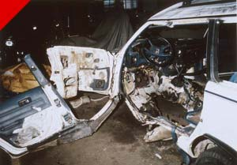

Submitted on Thu, 05/05/2011 - 5:52pm
By Marc Norton - May 5, 2011
First published inBeyond Chron - http://www.beyondchron.org/news.php?itemid=9153
For photos, see Indybay - http://www.indybay.org/newsitems/2011/05/05/18678943.php
A non-traditional alliance of workers in Portland and Seattle organized a Day of Solidarity with Hotel Frank Workers last Friday, April 29. The Portland Industrial Workers of the World (IWW), the Seattle Solidarity Network, and Hotel Frank workers were all on the streets picketing Provenance hotels. Provenance is the hotel management company that threw the UNITE HERE Local 2 contract at Hotel Frank in the trash almost a year ago.
In Portland, the IWW picketed Hotel Lucia. Provenance has its headquarters in Portland, as well as two upper-crust boutique hotels, Hotel Lucia and Hotel deLuxe. The IWW has a long history as a militant and radical labor union, often credited with popularizing the slogan and philosophy that “An Injury to One is An Injury to All.” That was certainly the spirit in evidence when they set up their picket line last Friday. You can see a short video of the action here.
In Seattle, the Seattle Solidarity Network picketed Hotel Max, another high-end Provenance boutique hotel. SeaSol, founded in 2008, is a much younger organization than the IWW, but has already established a reputation for organizing successful campaigns for workers and tenants’ rights. They can mobilize an impressive number of people, and did just that on Friday.
And in San Francisco, Hotel Frank workers held our regular Friday afternoon picket. Hotel Frank workers declared a boycott of the hotel last September. Since then we have staged an escalating series of actions aimed at restoring our Union contract, including active picket lines and unannounced delegations to management.
Submitted on Wed, 04/27/2011 - 3:42pm
by Jonathan Nack April 26, 2011
OAKLAND, CA – Supporters of International Longshore & Warehouse Union, Local 10 (S. F. Bay Area) rallied in downtown San Francisco on Monday, April 25, 2011. At issue was defending the union's right to close the ports of Oakland, San Francisco, and other ports in the S. F. Bay Area.
ILWU Local 10 closed the ports of San Francisco and Oakland for twenty-four hours on April 4, 2011, as part of a national day of action called in solidarity with workers in Wisconsin and Ohio, where the rights of state workers to collective bargaining have come under sharp attack [ http://www.indybay.org/newsitems/2011/04/14/18677103.php ].
The employers association at the ports, the Pacific Maritime Association (PMA) has filed a law suit against Local 10 for the April 4 port closures. The PMA's suit seeks to prevent such future solidarity closures by the union.
Submitted on Fri, 09/10/2010 - 3:50am
The following resolution passed by a unanimous vote of the Bay Area IWW General Membership Branch, September 2, 2010:
WHEREAS Troy Anthony Davis has been convicted of the 1989 murder of an off-duty policeman in Georgia based entirely on the testimony of nine prosecution witnesses, there being no forensic evidence against him whatsoever; and
WHEREAS seven of those nine witnesses have since recanted their testimony, telling stories of police misconduct and pressure to testify against Davis; and
WHEREAS even Amnesty International has taken up the case of Troy Anthony Davis, including having brought his sister, Marina Correia, to Britain to speak; and
WHEREAS a Georgia court just recently ruled against Davis, no be it
RESOLVED that the San Francisco Bay Area General Membership Branch of the IWW shall publicize the injustice perpetrated against Troy Anthony Davis; and be it further
RESOLVED that we shall provide a link to the main web site explaining his case (www.troyanthonydavis.org); and be it further
RESOLVED that this resolution shall be forwarded to Martina Correia, sister of Troy Anthony Davis and the leader of the campaign to free him; and be it finally
RESOLVED that we urge the IWW as a whole to take these same measures.
Submitted on Thu, 09/09/2010 - 2:25am
Note: Judi Bari and Darryl Cherney were IWW members at the time of these events in 1990.
By Kevin Fagan, Staff Writer, San Francisco Chronicle - September 8, 2010; Reproduced in accordance with Fair Use Guidelines.

It's an infamous case that never seems to go away, even after millions of dollars have been paid out in civil settlements and police say the trail has gone cold.
The case is the 1990 bombing in Oakland of Earth First environmental activists Judi Bari and Darryl Cherney, who were nearly killed when a nail-studded explosive device blew up in their car.
Nobody was ever charged with the attack, and now, two decades later, the FBI wants to destroy the last bits of evidence it has been storing ever since the investigation dribbled dry - remnants of the bomb and one like it that blew up in a North Bay town a few days earlier.
Not so fast, says Cherney, 54, who has never given up trying to solve the case himself.
Saying in court briefs that the evidence "provides the last best hope for learning who bombed Judi Bari," Cherney and his lawyers were in federal court Wednesday in San Francisco to try to force the FBI to turn the evidence over to them so they can run DNA and other tests on it.
Submitted on Tue, 09/07/2010 - 2:56am
To the Board of Directors of the Ecology Center [recycling@ecologycenter.org]:
As you are aware, the Industrial Workers of the World represents the workers at Curbside Recycling, which the Ecology Center operates. Over recent years, we have seen a pattern of behavior of your management team that betrays a strong anti-union attitude and borders on outright union busting.
- During negotiations for a new contract in December of 2007, your negotiation team sought to remove from the contract the clause that permits our members to refuse to cross a picket line. In other words, they sought the power to try to turn our members into strike breakers.
- During the negotiations for a new contract in December of 2008, Ecology Center management held a captive audience meeting with our members. This meeting, intentionally called without informing the union representatives, was an attempt to treat the Union as an unwanted "third party". This is a standard method of professional
union busters.
At present, the IWW is filing for arbitration on behalf of one of its members. We are forced to do so due to flagrant violation of the contract by the Ecology Center management. This violation concerns the disciplining of one of our members.
- Ecology Center management decided this member was guilty before they even held a hearing with him to hear his explanation of events.
- Ecology Center management illegally demoted this member, in violation of the contract, thus saving themselves $7.50 per hour for every hour this member works.
- During the mediation step, the Ecology Center management once again made statements implying that the Union was some outside force, a "third party".
There are several different avenues that arbitration can take. The Ecology Center management has insisted on taking the most expensive avenue, knowing full well that the IWW is a small union that does not have a large treasury. While we are willing to fight the full length for our members, meaning that we will spend what is necessary, this tactic of the Ecology Center management is not lost upon us, especially in light of their previous actions. Meanwhile, the Ecology Center management team parades behind their "green" and "community oriented" banner while they trample on the rights of their workers and carry on what can only be described as an anti-union policy.